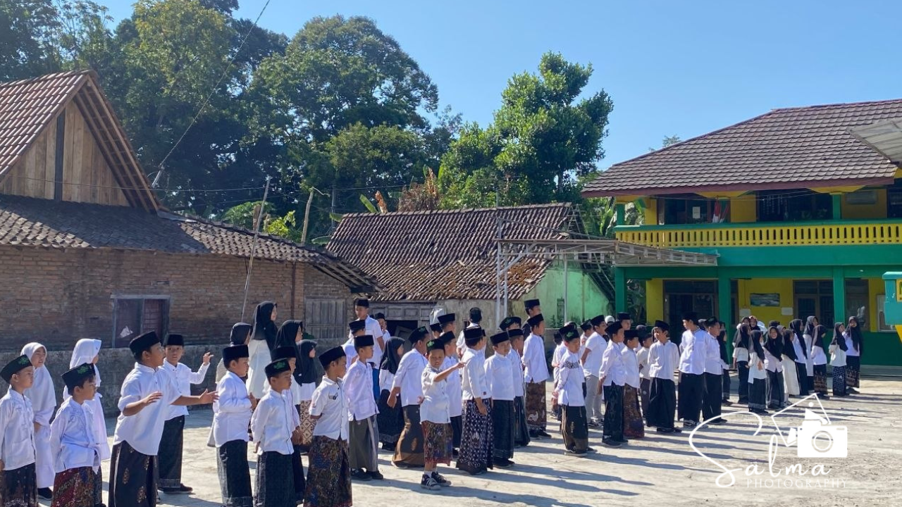

Rabu, 22 Oktober 2026, MI Salafiyatul Ma'muroh memperingati Hari Santri Nasional Tahun 2026 dengan penuh khidmat. Kegiatan ini diikuti oleh seluruh dewan guru, staf, serta siswa-siswi madrasah dengan mengenakan busana muslim bernuansa santri untuk menumbuhkan semangat keislaman dan kecintaan kepada tanah air.
Rangkaian acara dimulai pada pagi hari dengan pelaksanaan upacara bendera memperingati Hari Santri. Dalam amanatnya, pembina upacara menekankan pentingnya meneladani semangat juang para ulama dan santri dalam merebut serta mempertahankan kemerdekaan Republik Indonesia, serta pentingnya menjaga akhlak mulia dan kecintaan terhadap ilmu di era modern.
Usai pelaksanaan upacara, kegiatan dilanjutkan dengan agenda ziarah ke makam pendiri madrasah. Seluruh warga madrasah bersama-sama mendatangi peristirahatan terakhir tokoh pendiri sebagai bentuk penghormatan, mengenang jasa-jasa besar beliau dalam merintis pendidikan Islam, serta mendoakan agar segala amal ibadah beliau diterima di sisi Allah SWT.
Peringatan Hari Santri 2026 ini ditutup dengan doa bersama. Pihak MI Salafiyatul Ma'muroh berharap momentum Hari Santri ini dapat menginspirasi para siswa untuk terus giat menuntut ilmu, berakhlakul karimah, dan siap meneruskan perjuangan para ulama demi kemajuan bangsa dan agama.
← Kembali ke Beranda